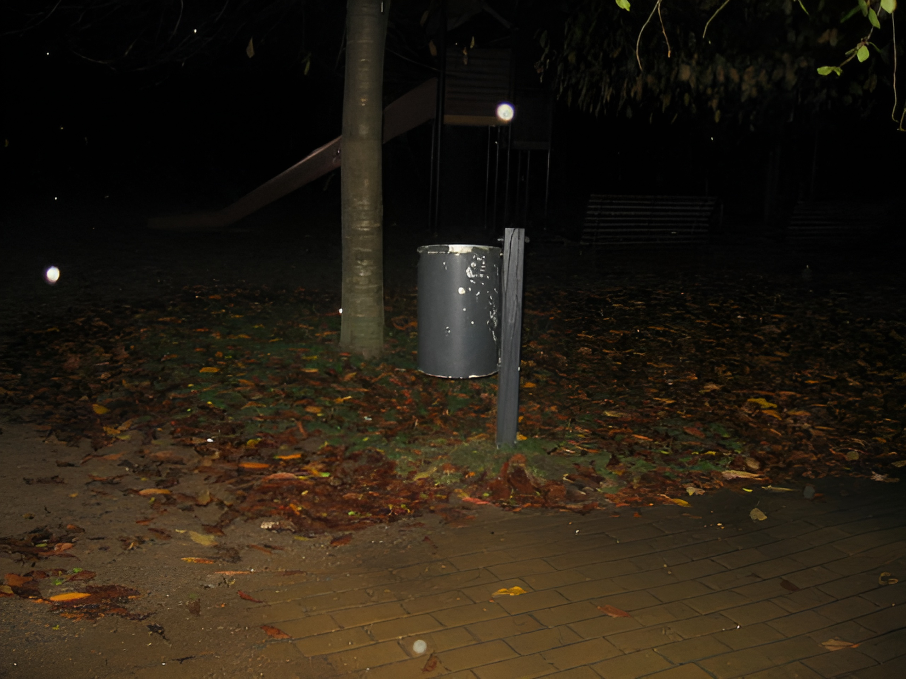

38.
But not every leisured aristocrat becomes bored and demoralized. For example, the emperor Hirohito, instead of sinking into decadent hedonism, devoted himself to marine biology, a field in which he became distinguished. When people do not have to exert themselves to satisfy their physical needs they often set up artificial goals for themselves. In many cases they then pursue these goals with the same energy and emotional involvement that they otherwise would have put into the search for physical necessities. Thus the aristocrats of the Roman Empire had their literary pretensions; many European aristocrats a few centuries ago invested tremendous time and energy in hunting, though they certainly didn’t need the meat; other aristocracies have competed for status through elaborate displays of wealth; and a few aristocrats, like Hirohito, have turned to science.